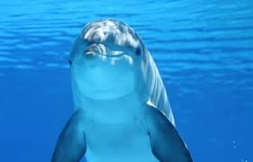

Delfines
 En Grecia, especialmente en el Mar Jónico y el Golfo de Corinto, se pueden avistar delfines, incluyendo especies como el delfín común y el delfín listado, además de focas monje ocasionalmente.
Amenazas
enfrentan diversas amenazas como la contaminación acústica, la pesca incidental, la contaminación del mar y la degradación de su hábitat, lo que pone en peligro a especies como el delfín mular.